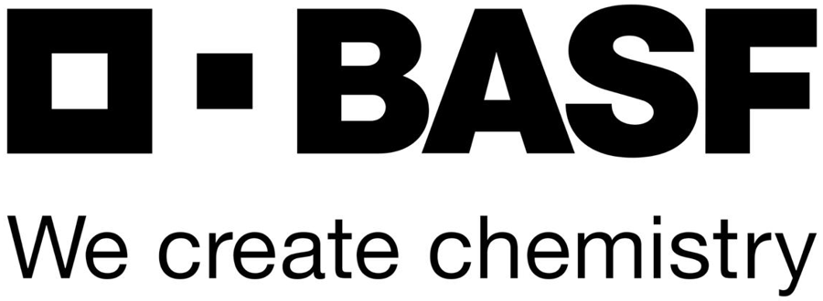
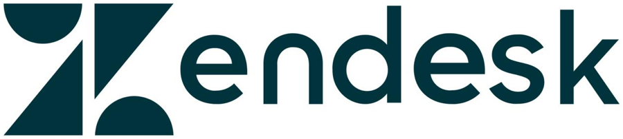
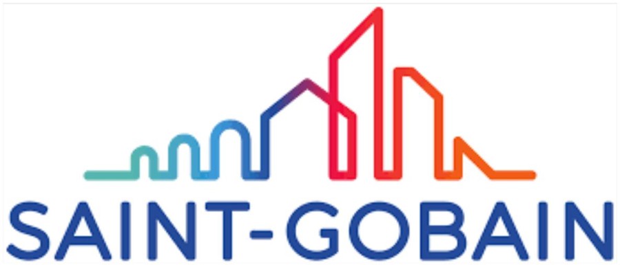
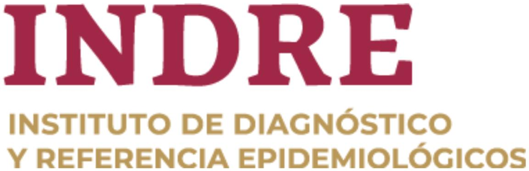
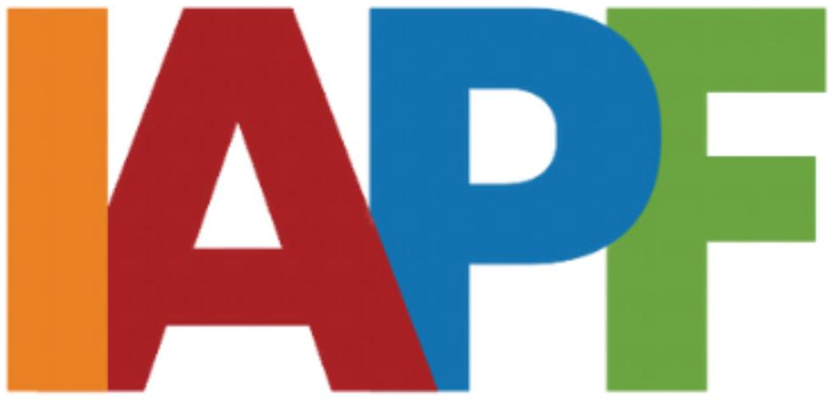
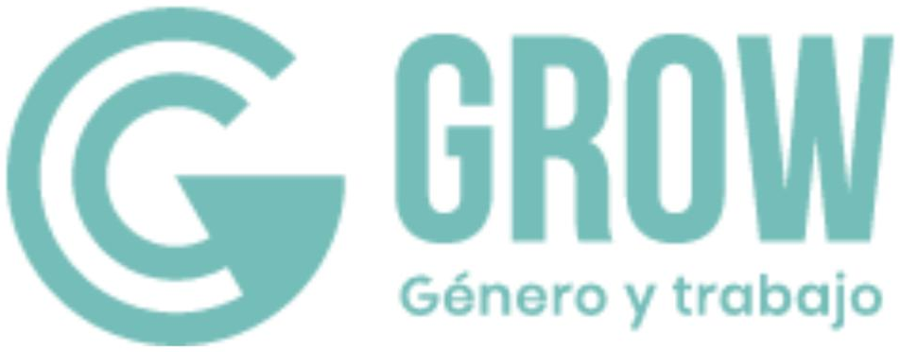
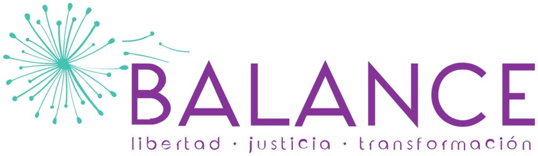

Diagnóstico
entender antes de intervenirComprendemos qué está ocurriendo, por qué está ocurriendo y qué necesita realmente atención. Identificamos patrones, tensiones, contradicciones, causas raíz, riesgos, fortalezas y prioridades.
Ayudamos a las organizaciones a construir la cultura que su operación necesita: entender qué debe cambiar, transformarlo y hacerlo permanecer.







Toda estrategia necesita una operación capaz de ejecutarla. Toda operación necesita una cultura capaz de sostenerla.
Una empresa puede cambiar su estrategia, estructura, tecnología o procesos. Pero si su cultura continúa produciendo comportamientos incompatibles con esa nueva forma de operar, el cambio difícilmente se sostiene.
En co.lmena trabajamos precisamente sobre esas brechas.
El co. Alignment Review analiza qué tan alineada está la cultura actual con la forma en la que una organización necesita operar. No buscamos únicamente entender qué cultura existe; buscamos entender si esa cultura está habilitando o frenando la siguiente etapa de la organización.
El resultado permite identificar:
Conoce el co. Alignment Review →Comprendemos qué está ocurriendo, por qué está ocurriendo y qué necesita realmente atención. Identificamos patrones, tensiones, contradicciones, causas raíz, riesgos, fortalezas y prioridades.
Diseñamos intervenciones específicas sobre las tensiones identificadas: cultura, liderazgo, equipos, colaboración, comunicación, toma de decisiones, procesos, prácticas de People y gestión del cambio.
La herramienta nunca es el producto. La transformación es el producto.
Convertimos las nuevas formas de trabajar en procesos, roles, prácticas de liderazgo, People systems, rituales, indicadores y mecanismos de seguimiento.
Una transformación está terminada cuando forma parte de la manera de trabajar.
No necesitas esperar a que exista un problema para revisar si tu cultura está preparada para lo que viene.
People & Culture. Siempre juntas.
Cada proceso de People es también una decisión cultural. No trabajamos cultura sin observar a las personas, el liderazgo y los sistemas de People que la producen. Y no diseñamos procesos de People sin preguntarnos qué cultura están construyendo.
No son iniciativas aisladas: son los mecanismos mediante los cuales una organización construye y reproduce su cultura.
¿Ya tienes equipo de People? No lo sustituimos: trabajamos con People →Para comprender si la cultura actual sostiene la operación que la organización necesita construir.
Para situaciones donde existen múltiples tensiones conectadas y necesitamos comprender causas raíz antes de intervenir.
Diseño e implementación de intervenciones específicas sobre comportamientos, liderazgo, formas de trabajo y People systems.
Diseño de mecanismos que permitan que nuevas formas de trabajar permanezcan más allá del proyecto.

Cuando un proceso de People necesita convertirse en cultura y sistema.
Leer el caso →
Cuando liderazgo y operación necesitan construir un lenguaje común.
Leer el caso →
Cuando el crecimiento obliga a rediseñar operación, capacidades y aprendizaje organizacional.
Leer el caso →No necesitas llegar con un diagnóstico. Puedes llegar con una pregunta, una tensión, un cambio o una nueva etapa. Nosotras empezamos por entender.